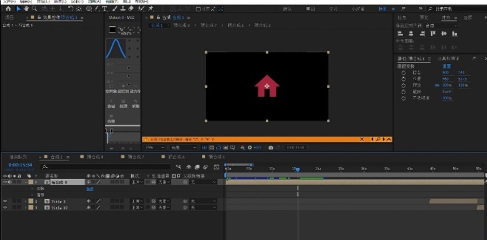
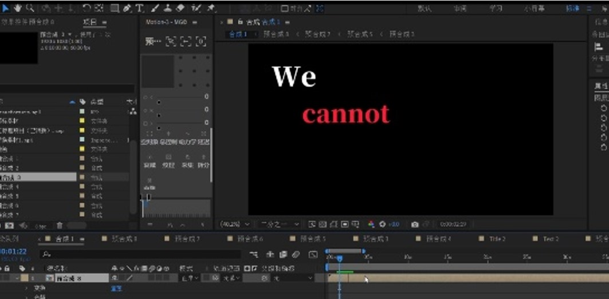

Project 02
Transformers Motion Typography
A motion graphics video created in After Effects, inspired by Optimus Prime’s monologue and developed through text animation, cinematic pacing, and visual rhythm.

Overview
Project Overview
This project is a dynamic text animation inspired by one of Optimus Prime’s iconic lines from Transformers. Instead of relying on character-based animation, I focused on typography, motion, and timing to communicate emotion and dramatic tone.
The goal was to create a short motion piece that could transform spoken language into a stronger visual experience. I wanted the words themselves to feel cinematic, expressive, and rhythmically controlled.
Role
My Contribution
I was responsible for the full concept, visual direction, text animation, pacing, and final editing of the project.
I used After Effects as the main production tool, while Premiere Pro, Photoshop, PowerPoint, and Meitu supported editing, layout decisions, and visual refinement during the making process.
Tools
Tools and Media
Adobe After Effects was the core software used to animate text, control timing, and build the visual rhythm of the video. This project focused on motion typography, so pacing, composition, and scale changes were all important parts of the process.
Supporting tools helped with visual organization and refinement, but After Effects remained the central platform for shaping the final motion design piece.
Process
Design and Development Process
I started by choosing the script and breaking the monologue into smaller sections so I could better control pacing, emphasis, and visual transitions. This step helped me decide which words should feel stronger, slower, or more dramatic.
After that, I began experimenting in After Effects with text scale, position, transitions, and motion timing. My early version felt visually too simple, so I continued exploring ways to make the animation more layered and expressive.
In the later stage, I focused on refining the relationship between text movement and emotional tone. I adjusted the composition, spacing, and timing so the typography could feel more cinematic rather than just decorative.
Visual Development
Motion and Composition Study
The visual development of this project was centered on motion rhythm and text-based storytelling. Since the project relied on words instead of character animation, the composition of each frame became especially important.

These process screenshots show the development environment inside After Effects. They reflect how I tested typography, timing, and symbolic motion elements while shaping the mood of the final video.
Challenge
Challenges
One challenge in this project was making text feel emotionally powerful without depending on complex imagery. Because the video is mostly driven by typography, every movement, pause, and transition had to contribute to the tone.
Another challenge was balancing visual intensity with clarity. I wanted the animation to feel dramatic and cinematic, but I also needed the text to remain readable and structured. This required repeated adjustments to scale, timing, and composition.
The project taught me that in motion design, even small changes in rhythm or spacing can have a large effect on how the viewer experiences the message.
Outcome
Reflection
This project strengthened my understanding of motion graphics, especially in relation to typography, pacing, and visual storytelling. It helped me see how text alone can become a strong narrative tool when it is supported by timing and composition.
It also gave me more confidence in using motion design to build atmosphere and emotional impact in a short-form video project.